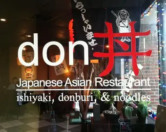

Don: Japanese Restaurant

Don is a Japanese restaurant located in Tate Street near UNCG campus. It is a sit in restaurant that offers take away as well. They are open all week.

Welcome to Dine On Campus! Here is a blog of Namrata's favorite places to eat around UNCG. I also listed the top 3 dishes for each of the places. Her favorite places to eat include Don: Japanese Restaurant, Chick-Fil-A: On Campus, and Gong Cha: Boba Shop. Hope you enjoy the blog!
Don is a Japanese restaurant located in Tate Street near UNCG campus. It is a sit in restaurant that offers take away as well. They are open all week.
Chick-Fil-A is located on the ground floor of the Eliot University Center in UNCG. They have the same menu as a normal Chick-Fil-A branch. You can also order from the mobile app for a quicker pickup

Unlike the other 2 places, you can use your Flex at Chick-Fil-A! You can also use your flex in the mobile app for quick and easy meal!
Gong Cha is a boba store located in Tate Street near UNCG. They have a variety of drinks and they're very customizable.

Thanks for visiting my blog! If you have any questions or comments, feel free to contact me at N_karki@uncg.edu